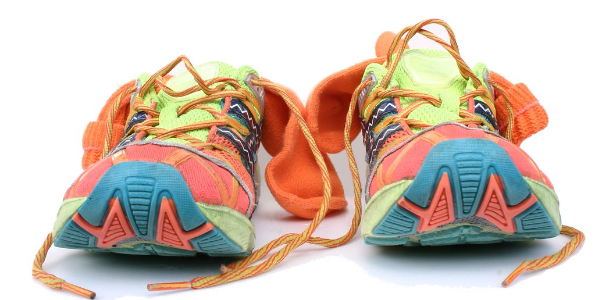
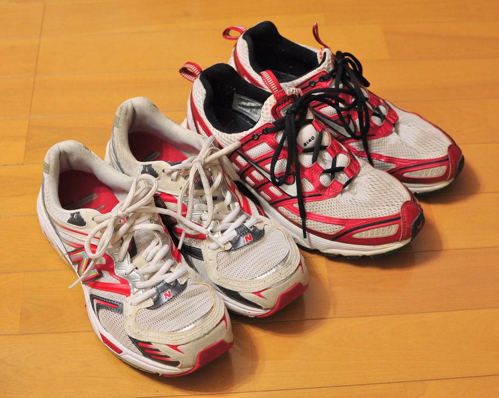
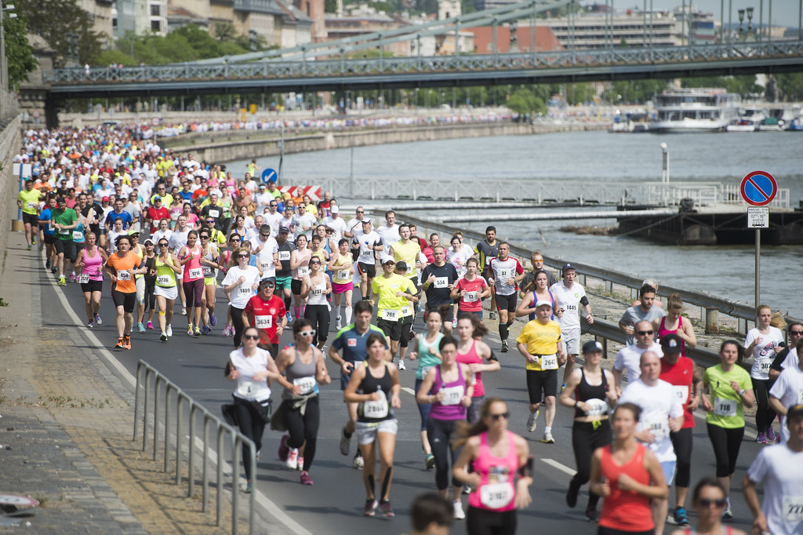

Every shoe has a second run in it.
A trade-in and resale campaign for Stride Again's refurbished running shoes.
Runners retire shoes with life still in them.
km — when most runners swap pairs (common guidance: 480–800 km). The foam wears out first; uppers and outsoles often have more to give.

Guilt says keep them. Hassle says bin them.
“They’ve got miles left. Feels wrong to throw them out.”
“Photographing, listing, shipping used shoes? Not worth ₹800.”
Trade in at 500 km. Someone runs again for half.
Hand in a pair; get store credit toward your next shoe on the spot.
New insoles and laces; only pairs that pass a sole-wear check go back on sale.
A new runner gets a proven shoe; the rest are recycled, not dumped.
Every pair carries its mileage.
Each restored shoe gets a hang-tag with the distance its first runner logged. The number is the ad.
One number, three places.
Ready for yours?

Swap the shoes you just raced in for credit, while the medal is still around your neck.
Ride the race calendar, not the media calendar.
Partner with 20 run clubs as collection points; both referrer and new runner get credit.
Sponsor the trade-in zone at two city races; mileage tags on display pairs at the expo.
Runners post their retired pair’s total km; the highest-mileage pair each week wins a restored set.
Approve a 12-week pilot in two cities.
- Pick two pilot cities with spring races
- Sign 20 run clubs as drop-off points
- Stand up the grading and restore line
- Finalise the mileage tag design